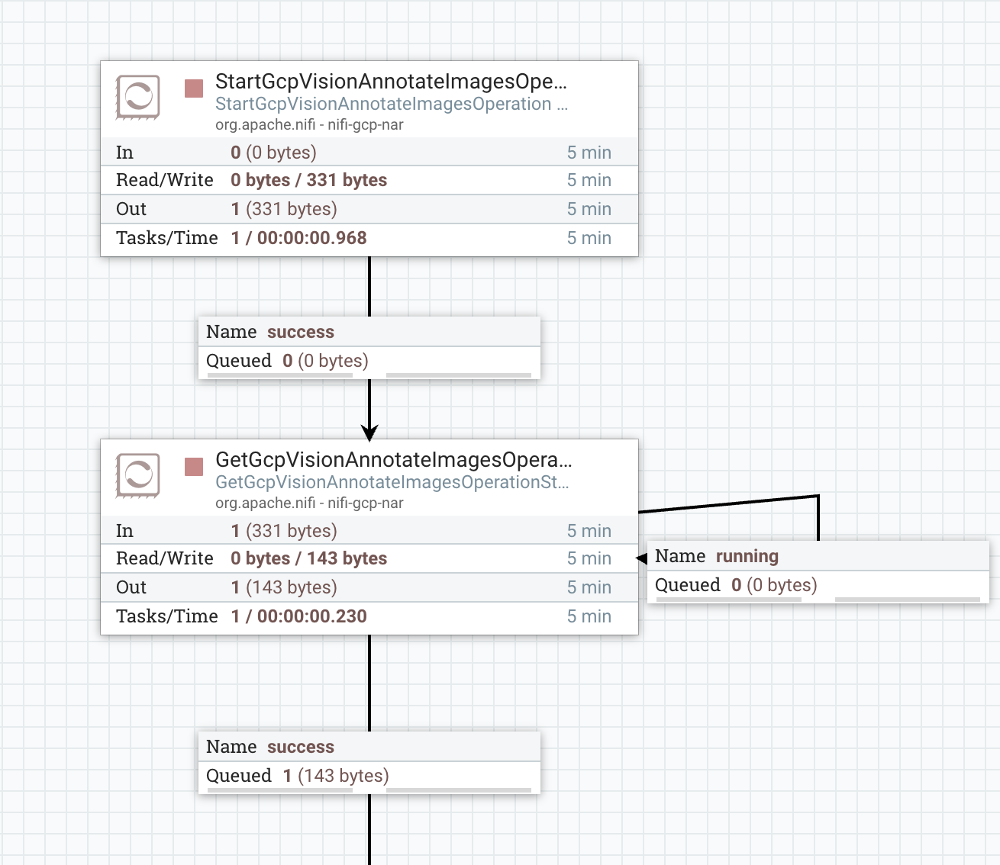

Google Cloud Vision - Start Annotate Images Operation
Prerequisites
- Make sure Vision API is enabled and the account you are using has the right to use it
- Make sure the input image(s) are available in a GCS bucket under
/input folder
Usage
StartGcpVisionAnnotateImagesOperation is designed to trigger image annotation operations. This processor should be used in pair with the GetGcpVisionAnnotateImagesOperationStatus Processor.
Outgoing FlowFiles contain the raw response to the request returned by the Vision server. The response is in JSON format and contains the result and additional metadata as written in the Google Vision API Reference documents.
Payload
The JSON Payload is a request in JSON format as documented in the Google Vision REST API reference document.
Payload can be fed to the processor via the JSON Payload property or as a FlowFile content. The property has higher precedence over FlowFile content.
Please make sure to delete the default value of the property if you want to use FlowFile content payload.
A JSON payload template example:
{
"requests": [{
"image": {
"source": {
"imageUri": "gs://${gcs.bucket}/${filename}"
}
},
"features": [{
"type": "${vision-feature-type}",
"maxResults": 4
}]
}],
"outputConfig": {
"gcsDestination": {
"uri": "gs://${output-bucket}/${filename}/"
},
"batchSize": 2
}
}
Features types
- TEXT_DETECTION: Optical character recognition (OCR) for an image; text recognition and conversion to machine-coded text. Identifies and extracts UTF-8 text in an image.
- DOCUMENT_TEXT_DETECTION: Optical character recognition (OCR) for a file (PDF/TIFF) or dense text image; dense text recognition and conversion to machine-coded text.
- LANDMARK_DETECTION: Provides the name of the landmark, a confidence score and a bounding box in the image for the landmark.
- LOGO_DETECTION: Provides a textual description of the entity identified, a confidence score, and a bounding polygon for the logo in the file.
- LABEL_DETECTION: Provides generalized labels for an image.
- etc.
You can find more details at Google Vision Feature List
Example: How to setup a simple Annotate Image Flow
Prerequisites
- Input image files should be available in a GCS bucket
- This bucket must not contain anything else but the input image files
Create the following flow

- Create an input and output bucket
- Make sure the input images(s) are available in the input GCS bucket
- Set the bucket property of ListGCSBucket processor to your input bucket name
- Keep the default value of JSON PAYLOAD property in StartGcpVisionAnnotateImagesOperation
- Set the Output Bucket property to your output bucket name in StartGcpVisionAnnotateImagesOperation
- Setup GCP Credentials Provider Service for all GCP related processor
Execution steps:
- ListGCSBucket processor will return a list of files in the bucket at the first run.
- ListGCSBucket will return only new items at subsequent runs.
- StartGcpVisionAnnotateImagesOperation processor will trigger GCP Vision image annotation jobs based on the JSON payload.
- StartGcpVisionAnnotateImagesOperation processor will populate the
operationKey flow file attribute.
- GetGcpVisionAnnotateImagesOperationStatus processor will periodically query status of the job.